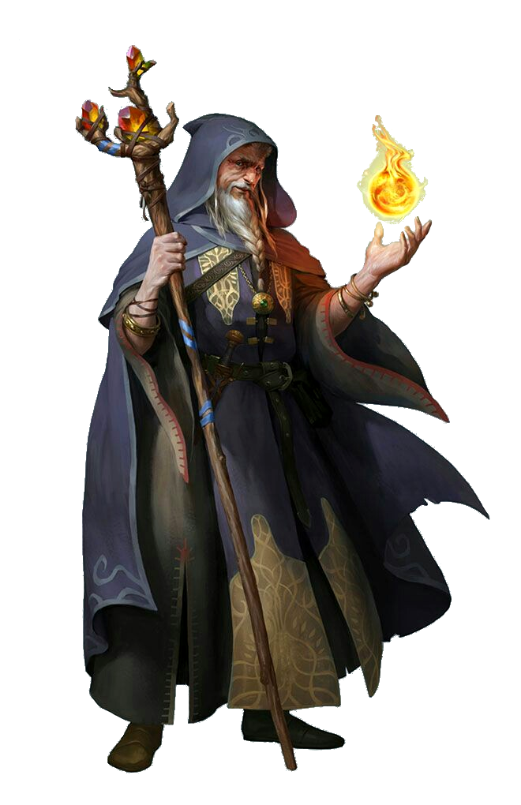

За пеленой обыденного кроются секреты безграничного могущества. Деяния сверхъестественных существ, легенды царств духов и богов, секреты создания величайших ужасов и чудес - все эти тайны манят тех, кто обладает умом и готовностью возвыситься над массами и достичь истинного величия. Таков путь волшебника. Хитрые и умные профессионалы в области магии - волшебники - ищут и копят эзотерические знания, используя оккультное искусство для сотворения чудес, недоступных простым смертным. Кто-то из них специализируется в определенной области и достигает в ней высочайшего мастерства, а кого-то привлекает разнообразие выбора, и он наслаждается возможностями всех школ магии. В любом случае волшебники - это умелые и могущественные представители разных народов, способные сокрушать врагов, усиливать союзников и изменять окружающий мир по своему желанию.
Если волшебники-универсалы готовятся к решению любых проблем, то волшебники-специалисты изучают школы магии, которые позволяют им достигать высочайшего мастерства в одной определенной области. Но вне зависимости от своего выбора, все волшебники творят порой, казалось бы, невозможные вещи и готовы помочь своим союзникам в любой ситуации.
Мировоззрение: Любое.
КЗ:d6.
Стартовое богатство: 2d6 x 10 зм (70 зм в среднем).
Знание (высший свет) (Инт), Знание (география) (Инт), Знание (инженерное дело) (Инт), Знание (история) (Инт), Знание (краеведение) (Инт), Знание (магия) (Инт), Знание (планы) (Инт), Знание (подземелья) (Инт), Знание (природа) (Инт), Знание (религия) (Инт), Колдовство (Инт), Оценка (Инт), Полет (Лвк), Профессия (Мдр), Ремесло (Инт), Языкознание (Инт)
Пункты навыков за уровень: 2 + модификатор Интеллекта.
| Ур | БМА | Стойкость | Реакция | Воля | Прочее | Закл/день (кр0) | Закл/день (кр1) | Закл/день (кр2) | Закл/день (кр3) | Закл/день (кр4) | Закл/день (кр5) | Закл/день (кр6) | Закл/день (кр7) | Закл/день (кр8) | Закл/день (кр9) |
|---|---|---|---|---|---|---|---|---|---|---|---|---|---|---|---|
| 1 | +0 | +0 | +0 | +2 | Мистическая связь, фокусы, написание свитков, школа магии | 3 | 1 | - | - | - | - | - | - | - | - |
| 2 | +1 | +0 | +0 | +3 | 4 | 2 | - | - | - | - | - | - | - | - | |
| 3 | +1 | +1 | +1 | +3 | 4 | 2 | 1 | - | - | - | - | - | - | - | |
| 4 | +2 | +1 | +1 | +4 | 4 | 3 | 2 | - | - | - | - | - | - | - | |
| 5 | +2 | +1 | +1 | +4 | Дополнительная черта | 4 | 3 | 2 | 1 | - | - | - | - | - | - |
| 6 | +3 | +2 | +2 | +5 | 4 | 3 | 3 | 2 | - | - | - | - | - | - | |
| 7 | +3 | +2 | +2 | +5 | 4 | 4 | 3 | 2 | 1 | - | - | - | - | - | |
| 8 | +4 | +2 | +2 | +6 | 4 | 4 | 3 | 3 | 2 | - | - | - | - | - | |
| 9 | +4 | +3 | +3 | +6 | 4 | 4 | 4 | 3 | 2 | 1 | - | - | - | - | |
| 10 | +5 | +3 | +3 | +7 | Дополнительная черта | 4 | 4 | 4 | 3 | 3 | 2 | - | - | - | - |
| 11 | +5 | +3 | +3 | +7 | 4 | 4 | 4 | 4 | 3 | 2 | 1 | - | - | - | |
| 12 | +6/+1 | +4 | +4 | +8 | 4 | 4 | 4 | 4 | 3 | 3 | 2 | - | - | - | |
| 13 | +6/+1 | +4 | +4 | +8 | 4 | 4 | 4 | 4 | 4 | 3 | 2 | 1 | - | - | |
| 14 | +7/+2 | +4 | +4 | +9 | 4 | 4 | 4 | 4 | 4 | 3 | 3 | 2 | - | - | |
| 15 | +7/+2 | +5 | +5 | +9 | Дополнительная черта | 4 | 4 | 4 | 4 | 4 | 4 | 3 | 2 | 1 | - |
| 16 | +8/+3 | +5 | +5 | +10 | 4 | 4 | 4 | 4 | 4 | 4 | 3 | 3 | 2 | - | |
| 17 | +8/+3 | +5 | +5 | +10 | 4 | 4 | 4 | 4 | 4 | 4 | 4 | 3 | 2 | 1 | |
| 18 | +9/+4 | +6 | +6 | +11 | 4 | 4 | 4 | 4 | 4 | 4 | 4 | 3 | 3 | 2 | |
| 19 | +9/+4 | +6 | +6 | +11 | 4 | 4 | 4 | 4 | 4 | 4 | 4 | 4 | 3 | 3 | |
| 20 | +10/+5 | +6 | +6 | +12 | Дополнительная черта | 4 | 4 | 4 | 4 | 4 | 4 | 4 | 4 | 4 | 4 |
Ношение брони и обращение с оружием:Волшебники умеют применять легкий и тяжелый арбалет, дубинку, кинжал и боевой посох, но неспособны пользоваться любой броней и щитами. Поскольку доспехи затрудняют движение, их ношение может привести к провалу заклинания с жестовыми компонентами.
Заклинания:Волшебник умеет творить мистические заклинания из списка. Он выбирает и готовит заклинания к применению заранее. Чтобы изучить, подготовить и сотворить заклинание, он должен иметь значение Интеллекта не менее 10 + круг заклинания. СЛ испытания против эффекта заклинания волшебника равна 10 + круг заклинания + модификатор его Интеллекта.
Подобно другим заклинателям, волшебник может применять ограниченное количество заклинаний каждого круга в день. Его базовый дневной запас заклинаний приведен в таблице «Волшебник».
Кроме того, волшебник получает дополнительные заклинания в день, если у него достаточно высокий Интеллект (см. таблицу «Модификаторы характеристики и дополнительные заклинания»). Волшебник может знать любое количество заклинаний, однако он должен заранее выбирать и подготавливать заклинания на день, проспав не менее 8 часов и потратив 1 час на штудирование своей книги заклинаний. В процессе работы с книгой заклинаний волшебник определяет, какие заклинания он намерен подготовить.
Дополнительные языки:Волшебник может заменить любой из дополнительных языков, доступных ему в связи с принадлежностью к народу, на драконий.
Мистическая связь (Пс) или (Экс):На 1 уровне волшебник формирует тесную связь с предметом или существом. Эта связь проявляется в одной из двух форм - предмете силы или фамильяре. Предмет силы волшебник может использовать для сотворения дополнительных заклинаний или как волшебную вещь.
Фамильяр - это волшебный питомец, улучшающий навыки и восприятие своего хозяина и способный помогать ему творить заклинания. Выбор формы мистической связи производится на 1 уровне и впоследствии не может быть изменен.
Волшебники, выбравшие в качестве мистической связи предмет силы, получают его в начале игры бесплатно.
Предметы, с которыми устанавливается мистическая связь, должны принадлежать к одной из следующих категорий: амулет, жезл, кинжал, кольцо, оружие или посох. Эти предметы всегда искусно сделаны. Оружие, получаемое таким образом на 1 уровне, не может быть созданным из особых материалов.
Чтобы предмет силы можно было использовать, амулет или кольцо должны быть надеты, а жезл, оружие или посох необходимо держать в руке. Амулет или кольцо занимает место соответствующей волшебной вещи. Волшебник, пытающийся сотворить заклинание без надетого (или находящегося в руке) предмета силы, обязан пройти проверку концентрации; в случае провала заклинание не сработает и будет потеряно. СЛ проверки равна 20 + круг заклинания.
Один раз в день предмет силы позволяет владельцу сотворить любые чары, записанные в его книге заклинаний, даже если они не были подготовлены заранее. Это заклинание во всех прочих отношениях явиляется обычными чарами данного волшебника (включая время сотворения, необходимость использовать компоненты, а также длительность действия и другие параметры, зависящие от уровня).
Это заклинание не может быть модифицировано метамагическими чертами или иными способностями. Предмет силы нельзя использовать таким образом для сотворения заклинаний из исключенных школ магии (см. школа магии).
Волшебник способен добавлять магические свойства своему предмету силы, как если бы он имел соответствующую созидательную черту, при этом его УЗ должен соответствовать требованию такой черты. Например, волшебник с кинжалом в качестве предмета силы должен достичь хотя бы 5 уровня, чтобы придать ему свойства магического оружия (см. черту Создание магического оружия и доспехов).
Если предмет силы - жезл, то он теряет магические свойства, как только последний заряд будет израсходован, но не разрушается, а остается искусно сделанным предметом, сохраняя свойства предмета силы, и его можно исподьзовать для создания нового магического жезла.
Магические свойства предмета силы, включая добавленные волшебником свойства волшебного предмета, работают только для вошебника, установившего мистическую связь. Если хозяин умер или заменил этот предмет на другой, то предмет силы теряет все свои магические свойства и становится обычным искусно сделанным предметом соответствующего типа.
Если предмет силы был поврежден, он восстанавливает все свои пункты прочности, когда его владелец очередной раз подготавливает свои заклинания.
Если предмет силы был утрачен или уничтожен, его можно заменить через одну неделю в ходе специального ритуала, который длится 8 часов и стоит 200 зм за уровень волшебника, плюс стоимость соответствующего искусно сделанного предмета. Предмет силы, полученный таким образом, не несет в себе добавочных магических свойств, которые имел предыдущий предмет силы.
Волшебник может также, проведя такой ритуал, назначить уже существующий волшебный предмет своим новым предметом силы. В этом случае эта вещь не теряет своих магических свойств, но приобретает все свойства предмета силы.
Школа магии: Волшебник может специализироваться в одной из школ магии, что увеличит количество заклинаний, которые он может сотворить в день, и даст ему новые способности в зависимости от школы.
Этот выбор делается на 1 уровне и впоследствии не может быть изменен. Волшебник, отказавшийся от специализации, считается принадлежащим к школе универсализма. Волшебник, выбравший специализацию в одной из школ, должен выбрать две другие школы в качестве исключенных - так он жертвует познаниями в одной области ради мастерства в другой.
Чтобы подготовить заклинание из исключенной школы, волшебнику нужно использовать две ячейки соответствующего уровня.
Например, волшебник исключает школу разрушения: это значит, что ему надо потратить две ячейки 3 круга, чтобы подготовить огненный шар. Кроме того, при создании волшебного предмета на любые проверки навыков налагается штраф -4, если требуется прибегнуть к любому заклинанию исключенной школы.
Универсал может подготавливать заклинания любой школы без ограничений.
Универсализм, равно как и любая специализация, дает свои особые возможности. Специалисты любой из школ получают дополнительную ячейку заклинаний на каждом доступном им круге, начиная с 1. Волшебник может применить эту ячейку только для подготовки заклинаний своей школы и из своей книги заклинаний, в том числе - с примененной к заклинанию метамагией. Универсалы не получают дополнительных ячеек заклинаний.
Фокусы:Волшебники могут каждый день подготавливать несколько фокусов (заклинаний 0 круга), как указано в таблице «Волшебник». Эти заклинания похожи на любые другие, но они не тратятся при применении, и их можно использовать сколько угодно раз в день. Волшебник может подготовить фокус, принадлежащий исключенной школе, но он будет занимать две ячейки.
Написание свитков:На 1 уровне волшебник получает Написание свитков в качестве дополнительной черты.
Дополнительная черта:На 5, 10, 15 и 20 уровнях у волшебника появляется дополнительная черта. В качестве дополнительной он может взять любую метамагическую черту, созидательную черту либо черту Вызубренные заклинания. Маг должен отвечать всем требованиям дополнительной черты, включая минимальный УЗ. Эти черты являются дополнительными к тем, что может приобрести любой персонаж при получении новых уровней.
Помимо дополнительных волшебник может выбирать любые черты (не только метамагические, созидательные или Вызубренные заклинания).
Книги заклинаний:аждый день волшебник должен перечитывать свою книгу заклинаний для подготовки чар. Он не может подготовить чары, которых нет в его книге заклинаний, за исключением заклинания чтение магических текстов, которое все волшебники помнят назубок и могут подготовить без помощи книги заклинаний.
Волшебник начинает игру с книгой заклинаний, содержащей все заклинания волшебника 0 круга (кроме заклинаний из исключенных школ, см. «Школы магии»), а также три заклинания 1 круга по его выбору, плюс количество заклинаний 1 круга, равное модификатору Интеллекта волшебника (также по его выбору).
На каждом следующем уровне волшебника он добавляет в книгу два новых заклинания любого доступного ему круга (или разных кругов). Он также может в любой момент добавить в свою книгу заклинаний другие, скопировав их из книг заклинаний иных волшебников.
Назад к списку классов